VIBE CODING · 互动原型
零售会员运营小样
同一次门店活动，应该邀请谁、发什么？切换会员分组，查看推荐触达动作与可以跟踪的指标。
这个求职演示用 AI 辅助搭建。原型将会员分组、活动动作和衡量指标放在同一界面，方便比较不同方案。
会员分组
以下人数为演示数据。
128 人
首购引导
发送欢迎消息，邀请到店试用当季新品。
观察指标 入会后 14 天内首购率
求职城市 · 上海
Xun Wu
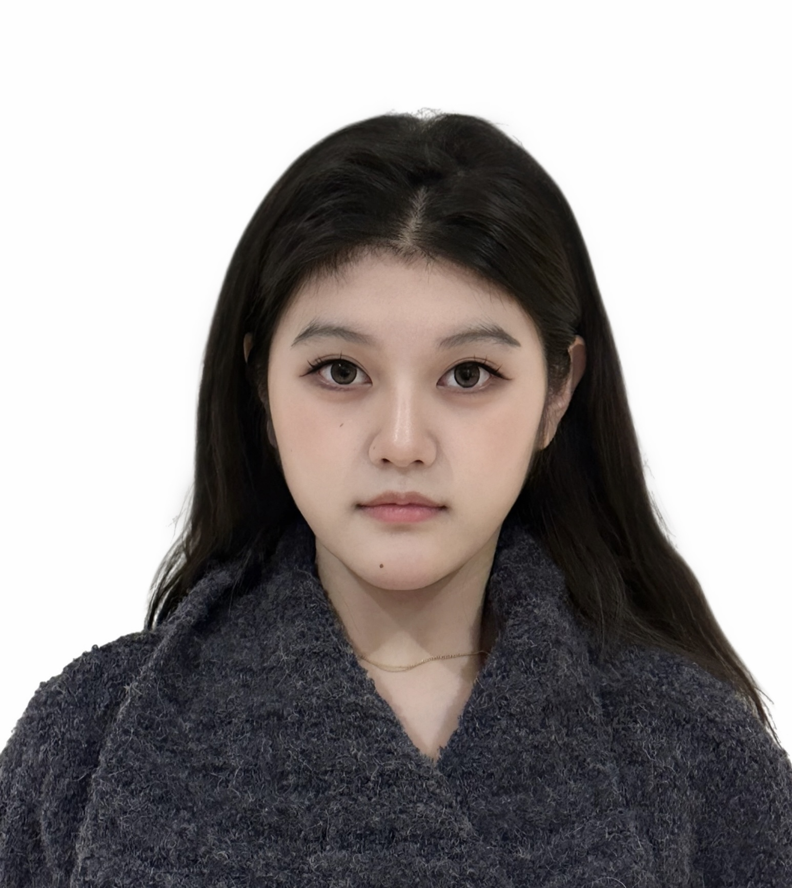
墨尔本大学国际商务硕士在读，本科主修市场营销。做过酒店销售支持、珠宝产品介绍与品牌网站搭建，希望在服饰、美妆或运动品牌从事商品企划、零售运营或 CRM，也关注商务拓展与海内外销售推广。
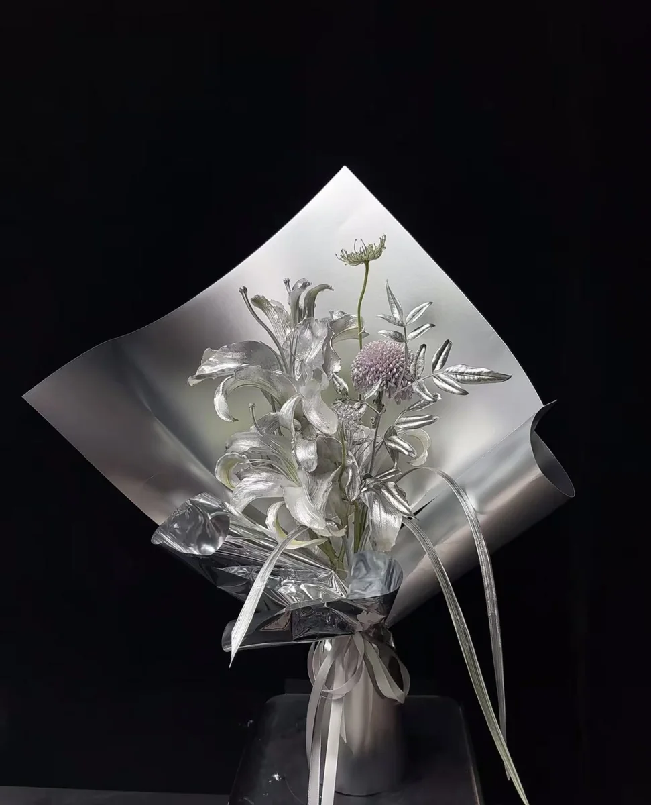
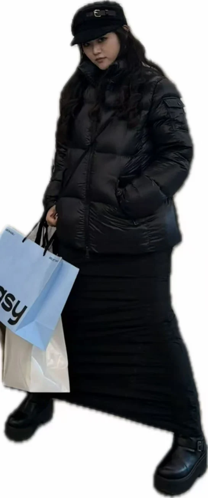
VIBE CODING · 互动原型
同一次门店活动，应该邀请谁、发什么？切换会员分组，查看推荐触达动作与可以跟踪的指标。
这个求职演示用 AI 辅助搭建。原型将会员分组、活动动作和衡量指标放在同一界面，方便比较不同方案。
以下人数为演示数据。
发送欢迎消息，邀请到店试用当季新品。
观察指标 入会后 14 天内首购率
澳大利亚墨尔本 · Box Hill 本地咖啡厅
我负责网站开发和数据分析，在 Readymag 搭建四页品牌网站，整合 GA4，并运营 TikTok 短视频内容。
围绕 “Cafe in Box Hill” 等搜索意图，配置页面标题、描述及关键词，并加入 Google Maps 和社交链接。
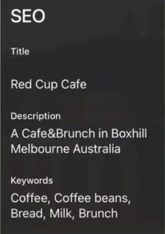
访客来自多个市场。移动端占比最高，因此我建议优先改进移动端布局与交互。
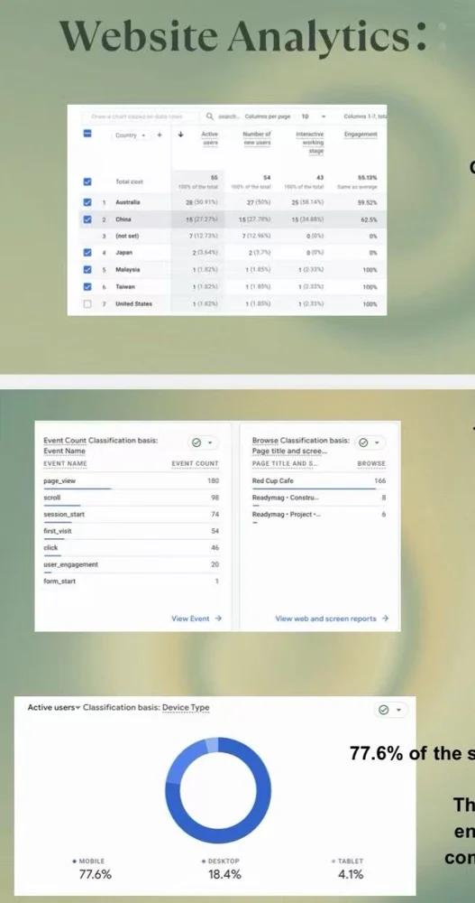
国际品牌策略
在英文小组汇报中，比较中国、海湾地区与东南亚市场的本地化做法，分析菜单调整和品牌定位变化各自适用的条件。
数据分析 · Excel
比较三种预测方法，按历史预测误差为四条航线选择模型，并将预测用于后续优化分析。
我的性格与工作方式
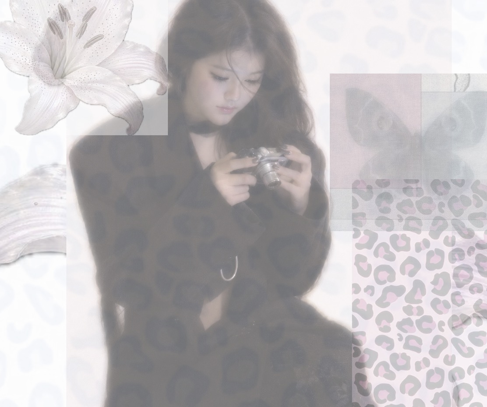
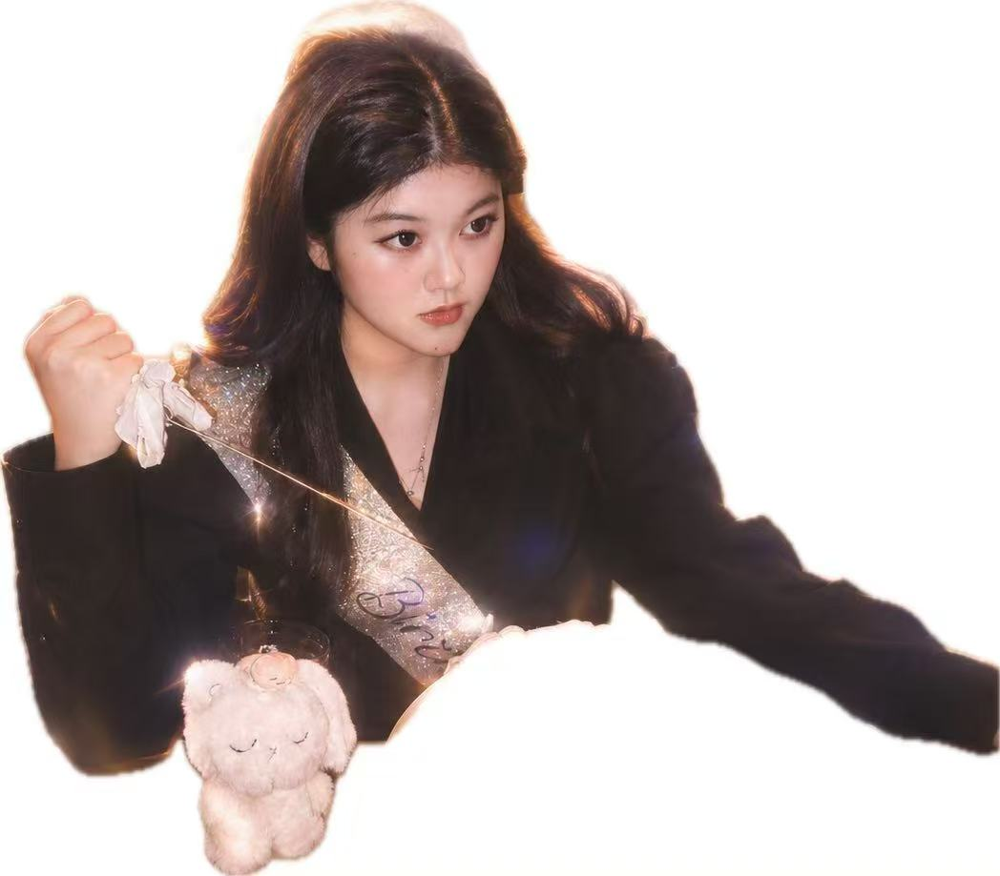
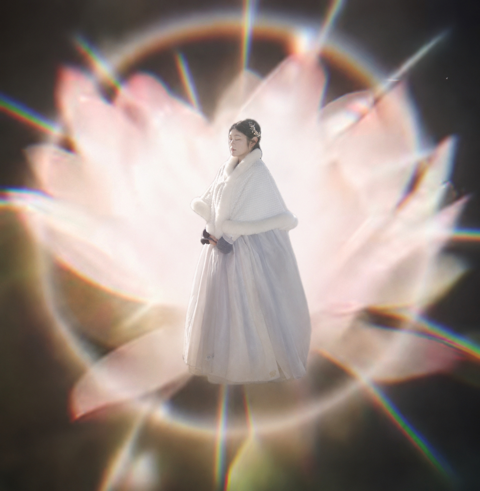
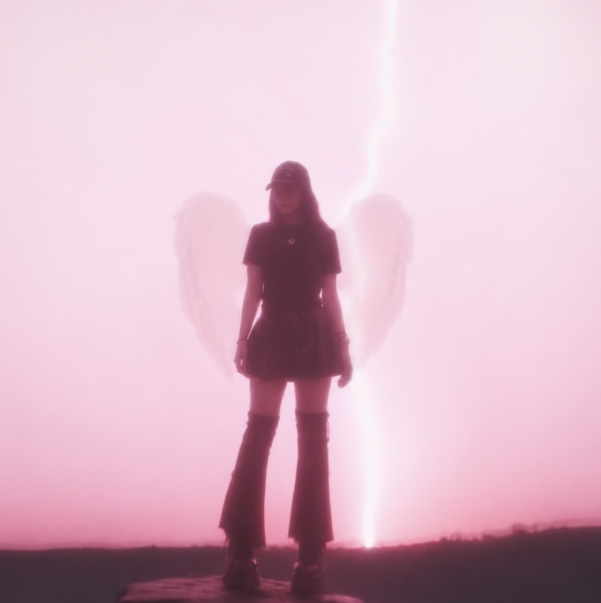
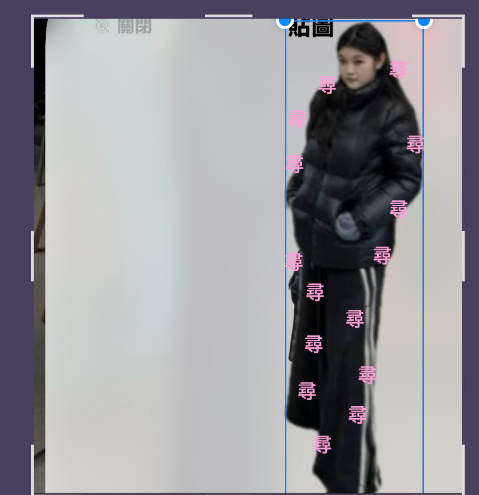
重视真诚有效的沟通，乐于与不同背景的人交流，在合作中建立理解与信任。
拥有较强的时间观念，注重提前规划、工作效率与履行承诺。
热爱摄影、时尚与视觉叙事，喜欢探索不同的创意表达方式。
乐于探索新环境，与不同文化背景的人合作，并以开放的态度面对挑战。
对人、文化、品牌与科技保持好奇，不断探索新视角与新知识。
我收集的视觉参考
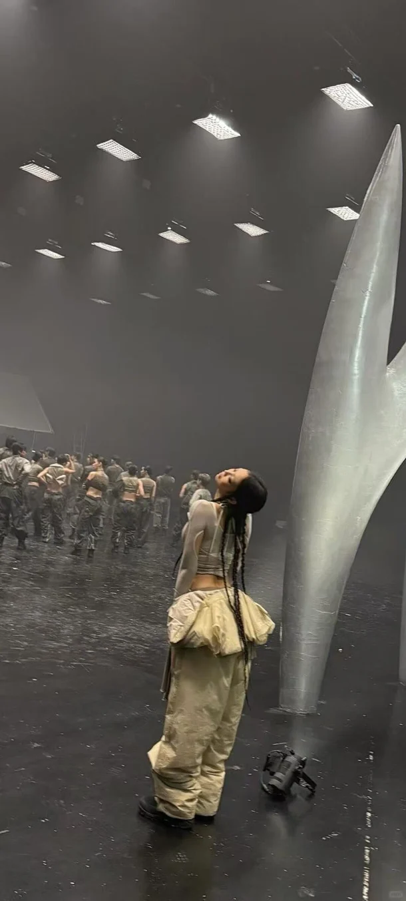
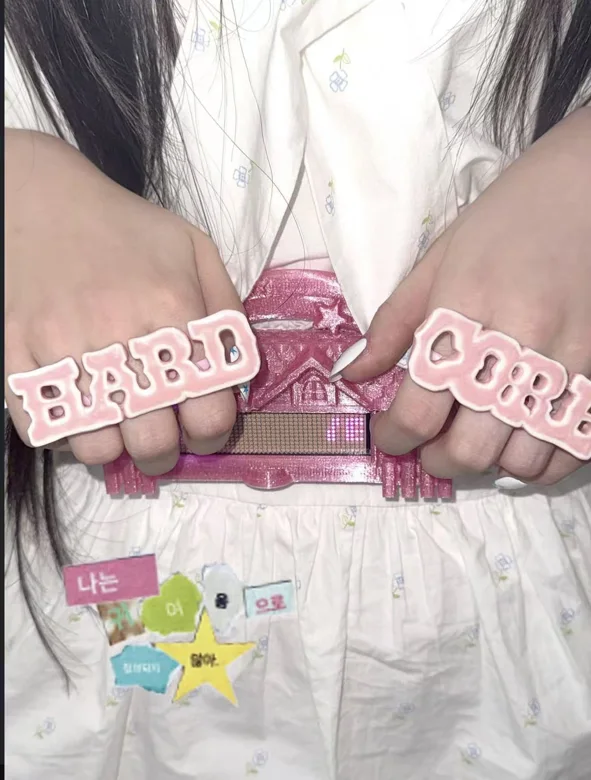
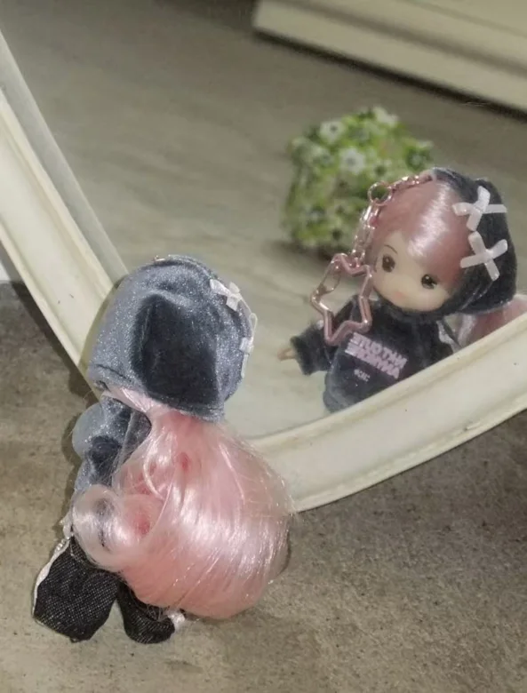
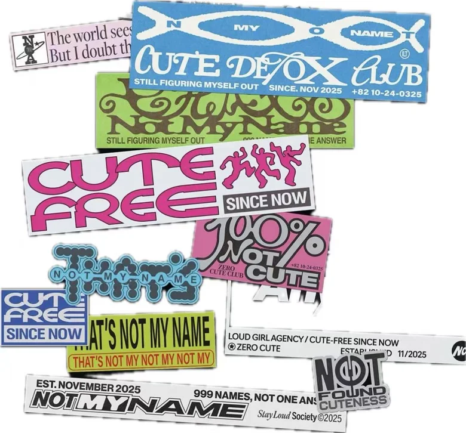
我喜欢观察服装轮廓与银色装置如何共同改变空间的气质。
粉色、亮片和夸张的字母形状，在我眼里是轻松又大胆的表达。
镜像让熟悉的玩偶多了一层陌生感，也让怀旧变得有些梦幻。
我喜欢看不同字形与色块挤在一起，形成像拼贴一样的视觉节奏。
2024.10 – 2025.01
国际商务硕士 · 在读
商学学士 · 市场营销主修、经济学辅修
短期交换 · 媒体心理学与消费者行为
欢迎交流上海的品牌营销、零售运营、会员运营与商务拓展机会。